Analyzing RokRat Loader - Malops
Introduction
In this post, I will examine the sample provided in the Malops website. We will attempt to answer the questions from the challenge by analyzing the sample itself,
performing a thorough malware analysis to better understand its behavior and characteristics.
The scenario is the following: Our Threat Hunting team has detected suspicious network traffic originating from the workstation of a senior research scientist at DefenseTech Industries,
a contractor developing next-generation missile defense systems. The suspicious traffic appears to be communicating with command and control C2 servers previously associated with the advanced
persistent threat group known as Lazarus. Initial investigation reveals that the researcher recently received what appeared to be a legitimate job application email with a PDF attachment.
Upon opening the attachment, a sophisticated loader was executed, which decrypted and deployed a variant of the RokRat remote access trojan. Our Incident Response team has extracted the
shellcode loader component from the infected system for analysis.
Analysis
Q1) What is the MD5 hash of the binary?
Opening the sample with CFF Explorer, we can observe that the executable is compiled for a 32-bit architecture. Additionally, the associated MD5 hash of the file can be retrieved directly from the tool, which is the following: CF28EF5CEDA2AA7D7C149864723E5890.
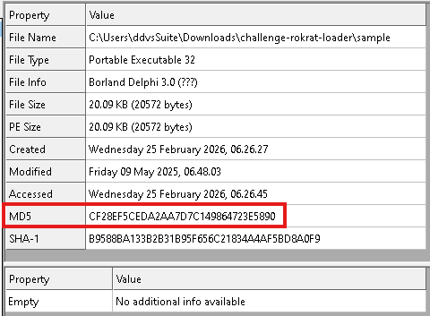
Q2) What is the entry point address of the binary in hex?
By inspecting the Optional Header, the Image Base can be identified as 0x400000, which represents the preferred virtual address where the executable is loaded in memory by the Windows loader. The original entry point is 0x1000, which is an offset relative to the Image Base. Therefore, the actual virtual address of the entry point is 0x401000 (Image Base + OEP). Additionally, the entry point resides within the first section which is .text section.
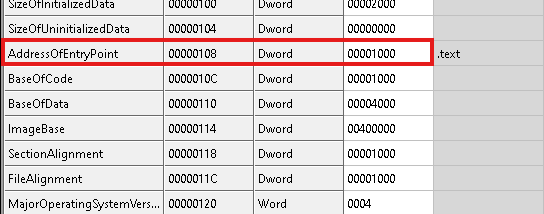
By inspecting the section table, it is possible to observe that the binary contains only two sections. In particular, one of them is a non-standard section named .Silvana. Unlike the typical PE sections, custom section names can sometimes suggest that the executable has been packed, modified, or produced with a specific toolchain.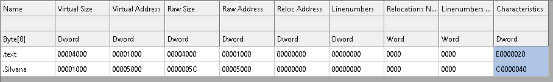
Moving to PE analysis with PE Studio and inspecting the Imports table, it is possible to notice that the executable imports very few functions, specifically LoadLibraryA and WSAStartup. The last one belongs to the Windows Sockets (WinSock) library. WSAStartup is used to initialize the networking subsystem and must be called before any other socket-related APIs such as send, recv, connect and so on. In practice, any program that performs network communication on Windows typically invokes WSAStartup first to set up the socket environment. The LoadLibraryA is used to load at runtime the all other libraries.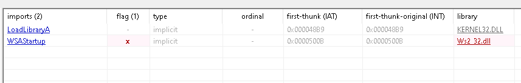
In the Strings section, several unusual and seemingly meaningless strings can be observed. These strings do not immediately reveal a clear purpose and may be obfuscated, encoded, or related to internal functionality of the program.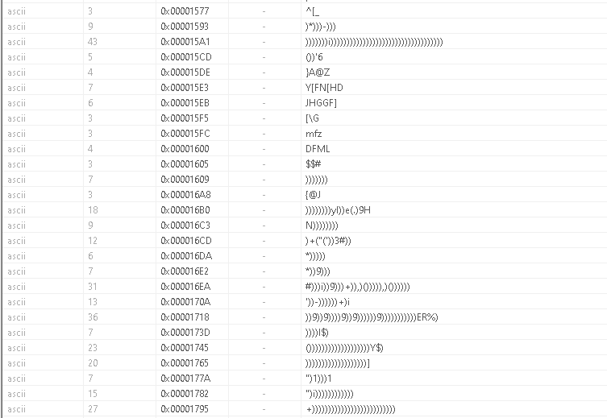
Q3) What XOR key is used to decrypt the embedded shellcode in hex?
By opening the sample in IDA, the following assembly code can be observed.
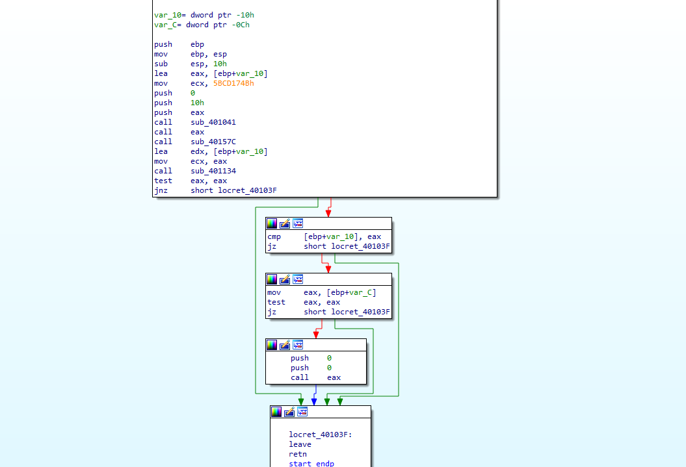
As shown in the previous figure, the first function encountered is sub_401041. This routine performs a series of operations that are difficult to fully understand through static analysis alone. However, it is possible to observe that the function is called with the following parameters: the value in eax, 0x10 (likely representing a size in bytes), 0, and the constant 0x5BCD17DB. These arguments suggest that the function may be performing a transformation routine on a 16 byte buffer.It is also possible to observe that immediately after the call to sub_401041, there is another instruction: call eax. This indicates that the previous function decrypts the function at runtime and stores its address in the eax register. By placing a breakpoint on the call eax instruction, it is possible to observe that the function being resolved at runtime is RtlFillMemory. Therefore, it can be concluded that sub_401041 performs a decryption routine that reconstructs the address of the APIs.
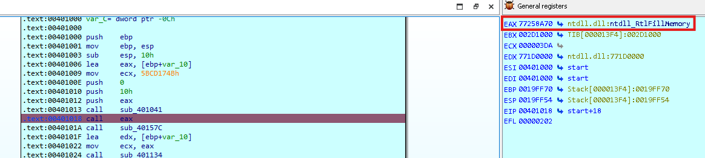
Subsequently, we encounter sub_40157C, shown in the figure below.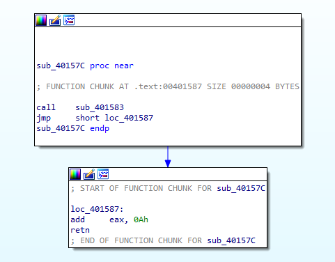
This function is used to make eax point to a sequence of data stored inside the .text section. This byte sequence is shown in the figure below. It can be observed that it begins with the value 0x29 at address 0x40158B, followed by a continuous series of bytes.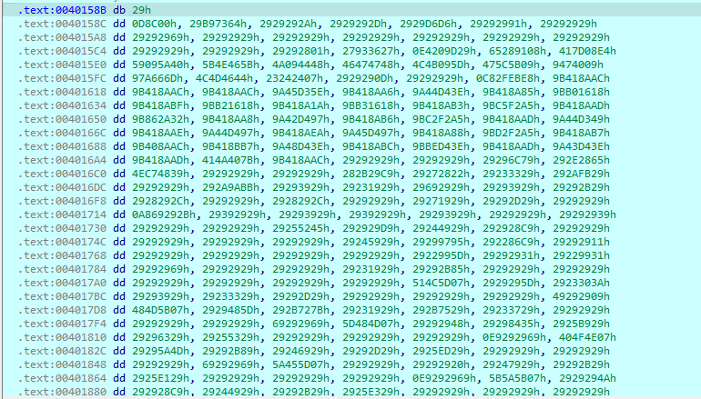
Inside sub_401134, a decryption operation is performed. Specifically, a XOR is applied between the byte located at the address pointed to by eax and the value stored in bl. This operation is executed inside a loop, which continues iterating until the esi register reaches zero.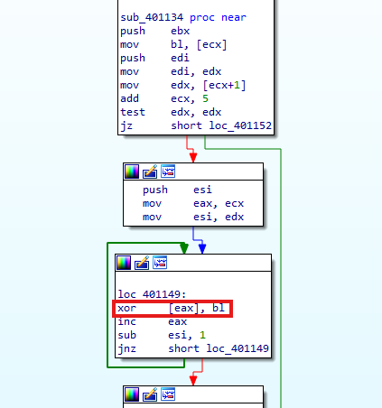
By analyzing the loop dynamically, it is possible to observe that the value stored in bl is 0x29, which is XORed with the byte sequence pointed to by eax that was identified earlier. This sequence of bytes corresponds to the encrypted shellcode embedded in the binary. This means that 0x29 is the key.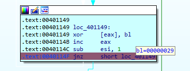
By moving the breakpoint to the next instruction, an error message appears indicating that the code is trying to write to a non-writable memory location. This behavior may occur because the shellcode is incomplete or corrupted.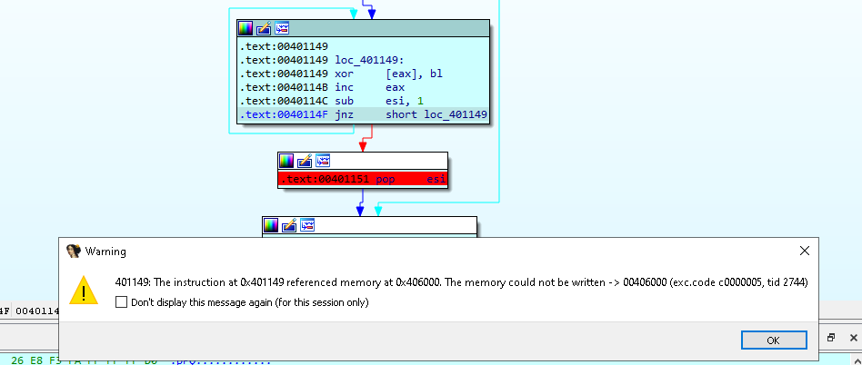
After the error, it is possible to observe that, for a valid memory region, the shellcode is successfully decrypted. The resulting payload is a PE executable with the sections .text, .rdata, .gfids, .tls, .rsrc, and .reloc. However, at a certain point in the memory dump of the decrypted executable, a sequence of repeating 0xCC bytes appears throughout the remainder of the dump. This indicates that the decrypted file is likely a decoy executable.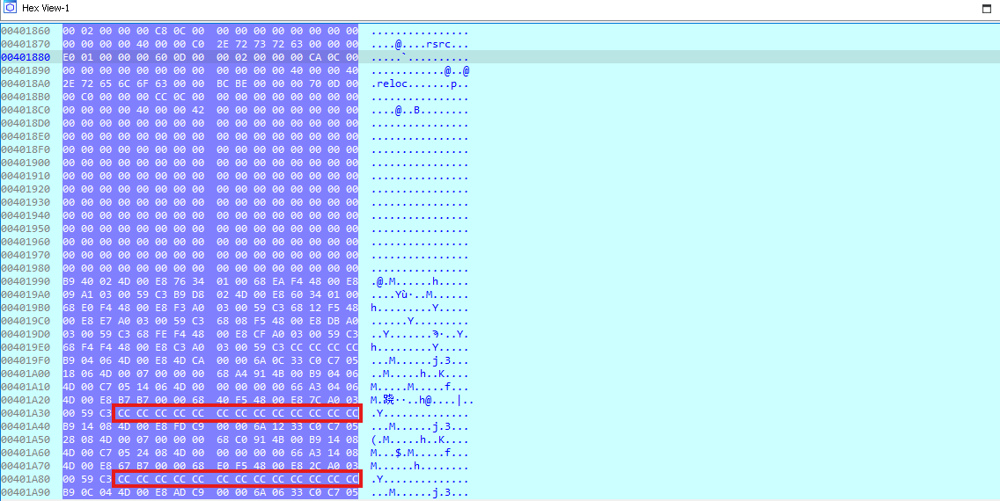
Q4) What is the memory protection constant used when allocating memory for the payload in hex?
Q5) What is the hash value used to find the VirtualAlloc function in hex?
By bypassing the error, for example by manually modifying the eip register during debugging, it is possible to reach sub_4012C2.
Inside this function, multiple calls to sub_401041 can be observed, which, as previously discussed, is responsible to reconstruct the addresses of
required APIs at runtime.
It is important to note that the function uses several constant values, for example 0xAA7ADB76 in the first block. This value is later used to reconstruct
the correct API address. We can also see that after every call to sub_401041, there is always a call eax instruction. This means
that the sample first decrypts the API and then immediately calls it using the address stored in eax.
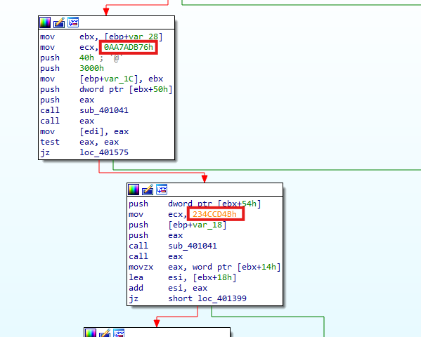
By performing debugging and moving execution right after the call to sub_401041, it is possible to observe that eax contains the address of the Windows API VirtualAlloc. Furthermore, VirtualAlloc takes four parameters, which correspond exactly to the four push instructions that are passed before the call to sub_401041.In practice, this routine converts the hash value 0xAA7ADB76 into the corresponding API name, using the custom hashing function, and then uses the previously pushed values as input parameters for the decrypted function. Therefore, it can be concluded that the value 0x40 corresponds to the flProtect parameter, and the associated memory protection is PAGE_EXECUTE_READWRITE.
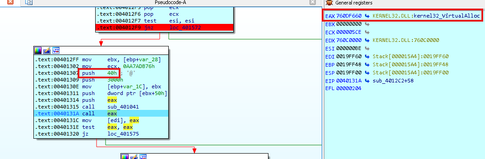
Q6) How many bits does the DLL name hash algorithm rotate right (ROR) by in hex?
By navigating into sub_401041, which is the function responsible for decrypting and resolving APIs at runtime, it is possible to observe the following block of code, as shown in the figure below. This code represents the core logic used to reconstruct the correct API address starting from its hashed value. It is possible to observe the presence of a loop, and inside this loop there is a rotate right (ROR) operation. Specifically, the bits are rotated to the right by 0xB (11) positions.
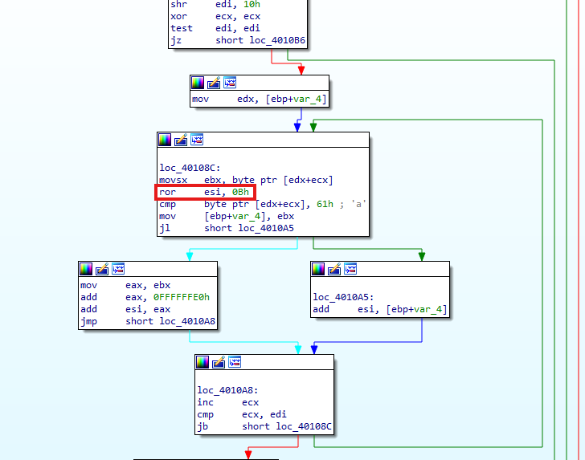